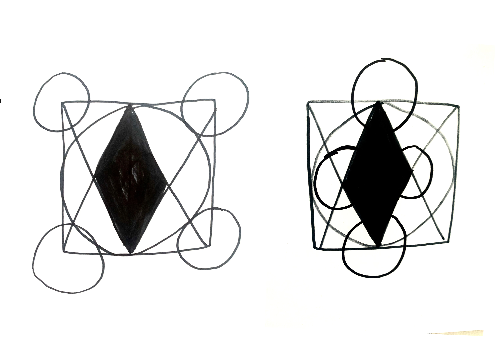
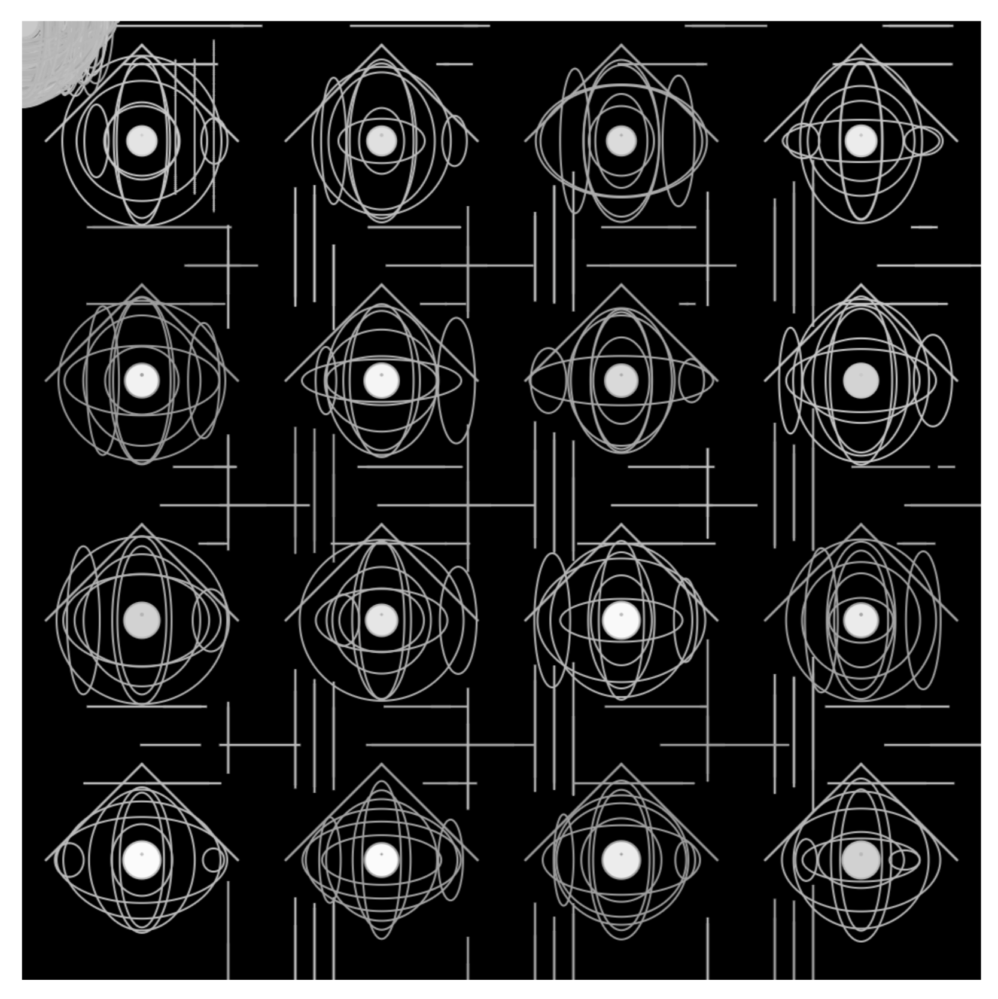

Analog and Digital Algorithms 15.10.2023
Analog Algorhithms
Algorithms seemed like something abstract and far away to me, although, of course, I know we are surrounded by them at all times. When we were being told to create our own algorithm, meant to create a design pattern by just using word instructions. Which we would then give to to others, that would follow them and create an image just by what you've wrote I was curious to find out, how I could make it work. Surprisingly it was very difficult to create just the right
Draw a 10 × 10 cm square. Draw a line from the center of the top horizontal line of the square to the center of the bottom line of the square. Draw the diagonal from the top center line to the bottom left point. Draw a diagonal from the top line to the bottom right point. Draw a diagonal from the center of the bottom line of the square to the top left point. Draw a diagonal from the center of the bottom line of the square to the top right point. Draw a circle that touches all the inner centers of the square. Paint the central rectangle black and draw a circle at each corner of the square with the corner point of the square in the middle of the circle. The circles should be so large that they border the outer line of the inner circle
the first algorhithm was quite strict in it's rules, so I decided to change it up a bit I tried quite a lot of different wordings until I was satisfied with the outcome. At first there was very little variation, because I thought the task was to word the instructions so precise, that the outcome would be excatly the image you had in mind. I then understood, that leaving a little room for interpretation and chance, would actually add a lot to the design, because it was a lot more interesting, to look at how different people would react to the little room you left for improvisation. the final wording of my algorhithm was:
Overall I found the thought behind this task really intriguing because it highlighted how little variations of phrasing could have a huge difference in the outcome of something. I Figured that this was not just the case in the digital realm, but also in real life. Little changed of words, actions and thoughts, can have an immense impact on your reality.Draw with a black marker. Do not fill the sheet to the edge, but leave at least 4 cm space. Draw a circle about 3 cm in size. Draw a small circle in the center of the large circle. Draw four ovals that evenly cross the large circle. Connect the four ovals with an even black curved line. Draw a line from the outer end of each oval outwards. Connect some of the lines together. Add more ovals and lines bordering the existing pattern to complete the pattern.
Some of the Images, created by close ones, that read the description of the algorithm, interpreted it and turned it into an image
Fabian told us a lot about the changes that would be expected in the field of art and in all aspects of life basically. The way everything is and would possibly become fully digitalized. What made me quite sad was the realization that this was the thruth, all things we know nowadays are being translated into algorhithms, equasions and numbers. From a purely human perspective I wonder if reality is really that simple. If being human, the experience of being alive, of looking at the world can be encaptured in these machines. We learned that generally computers only differenciate between 0 and 1. True or false. Right and wrong. I wonder if that way to view the world, society, humans, is a good way to move forward. Or if potentially, we loose a lot of the beauty and magic of being alive in these digital realms. but that is just a personal view of course. There is nothing you can do about it anyways. Withing the next weeks this thought process about my own opinion on the topic was very present.
Digital Algorhithms
Thematically following the first week, in week three we were supposed to program our own “algorithm” using p5js. The aim was to create
To build my code, I first started by importing type script files for p5js into Replit with the setup in which I had a canvas size of 500x500. The setup only runs once and determines components such as background color, stroke color and size of the canvas. I then explained some global variables such as “area”, “number” (to define the number of components), “gutter” (the distance between individual grid cells) as well as width, height, X, Y (the original position of the design in the Grid) and “Diam” (the extent of the individual elements in the grid) to define the size and layout of the grid. I then created some nested loops that divide the canvas into a grid in which each small multiple should have a position. In these loops I also created the individual shape and color components, which were to be generated randomly. The individual shapes each had a value in which the size was randomly generated within a given frame (e.g. Random (50.90). I used circles, ellipses and lines for the design.
Looking back, I can say that I was and am generally quite satisfied with the project, even if certain parts could definitely use some improvement. Similary to the project at the beginning of the semester, it would have been interesting to make even more coincidence possible. The individual shapes could also not be adapted to a changed diameter, as the construction would then collapse. I also wondered why there were a bunch of lines in the corner of my design. Nevertheless, the project gave me a better view of the opportunities that arise from working with algorithms, but from a philosophical perspective also the human desire for control and social norms

My homework for the "small multiples" task. You can see slight changes of the position, width and height of the shapes. But you do have look a little closer in order to notice